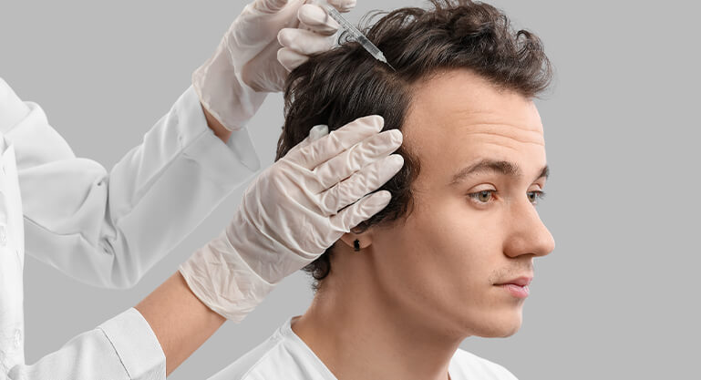

Günümüzde en sık karşılaşılan kozmetik sorunlardan biri de saç dökülmesidir. Erkeklere
özgü olduğu düşünülse de kadınların da zaman zaman karşılaştığı bir problemdir.
Günlük olarak 50 ile 100 saç teli arasında dökülme normaldir. Bunun üstündeki
rakamlarda dökülme söz konusuysa bir uzmana danışılmalıdır. Saç dökülmesi saç lazeri,
PRP gibi çeşitli saç tedavileriyle azaltılabilse ya da önlenebilse de yoğun dökülme
yaşanmış kişilerde kalıcı çözüm olarak saç ekimi operasyonu gerçekleştirilmelidir.
SAÇ EKİMİ NEDİR?
Saç ekimi, saç dökülmesi sonucu meydana gelen seyrelme ve kellik sorununa doğal ve kalıcı bir çözüm yoludur. Saç
ekimi
operasyonuyla hastanın ense bölgesinden genetik olarak dökülmeye dayanıklı saç kökleri toplanarak kellik ya da
seyrelme
oluşmuş kısımlarda açılan kanallara ekilir. Saç ektirme operasyonu lokal anestezi altında yapılan mikro cerrahi
bir
ameliyattır. Bu nedenle hastane ortamında ve anestezi doktoru eşliğinde yapılmalıdır.
SAÇ EKİMİ KİMLERE UYGULANIR?
Saç ekimi için adaylar öncelikle tıbbi geçmişleri ve muayeneleri sonucunda bu işlemin uygulanabilirliği
açısından değerlendirilir. Saç ekimi için uygun olan bireyler aşağıdaki gibi olabilir:
Genetik veya hormonal faktörlere bağlı olarak saç dökülmesi yaşayanlar.
Daha önce saç ekimi yaptırmış ancak sonuçlarından memnun kalmamış kişiler.
Yetersiz saç yoğunluğu veya seyrek saçları olanlar.
Saç bakım ve tedavilerine yeterince zaman ayıramayan kişiler.
Farklı sağlık sorunları nedeniyle saç dökülmesi veya seyrelmesi yaşayanlar.
Hamile olmayan kişiler.
Kalp rahatsızlığı ya da kronik hastalığı olmayan kişiler

SAÇ EKİMİ İÇİN UYGUN BİR ADAY MIYIM ?
Saç ekimi için uygun bir aday olup olmadığınızı değerlendirmek için bir saç ekimi uzmanı tarafından ayrıntılı bir
inceleme
yapılması gerekir. Genel olarak saç ekimi için uygun adaylar aşağıdaki kriterleri karşılamalıdır:
İdeal adaylar saç dökülmesi veya kelliği olan kişilerdir. Saç dökülmesinin derecesi saç ekimine uygunluğu
etkileyebilir.
Saç ekimi yapılacak kişinin saç kökleri ve kafa derisi sağlıklı olmalıdır. Saç kökleri ekim sonrası yeni
saçların
çıkmasına uygun olmalıdır.
Saç ekimi cerrahi bir işlem olduğu için adayların genel sağlık durumlarının iyi olması gerekir. Kronik
sağlık sorunları
ya da ciddi tıbbi problemler saç ekimini riskli hale getirebilir.
Saç ekimi genellikle saç dökülmesi sorunu tamamen çözüldükten sonra tercih edilir. Bu nedenle adayın yaşına
ve
saç dökülmesinin seyrine bağlı olarak en uygun zamanın belirlenmesi önemlidir.
Saç ekimi için kullanılacak saç kökleri genellikle donör alan adı verilen sağlıklı bir saç bölgesinden
alınır. Donör
alanın yeterli saç kökü sağlayabilmesi önemlidir.
Uzman; saç yapınızı, sağlık durumunuzu ve beklentilerinizi değerlendirecek ve sizin için en uygun tedavi
planını
önerecektir